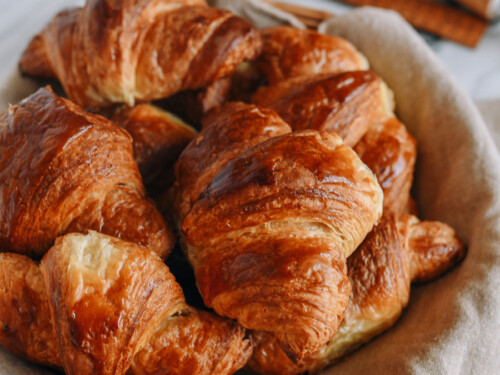

A croissant is a French pastry made from puff pastry in a crescent shape. The dough is layered with butter, rolled and folded several times in succession, then rolled into a thin sheet, in a technique called laminating. The process results in a layered, flaky texture, similar to a puff pastry.
 About Croissants Photos Contacts